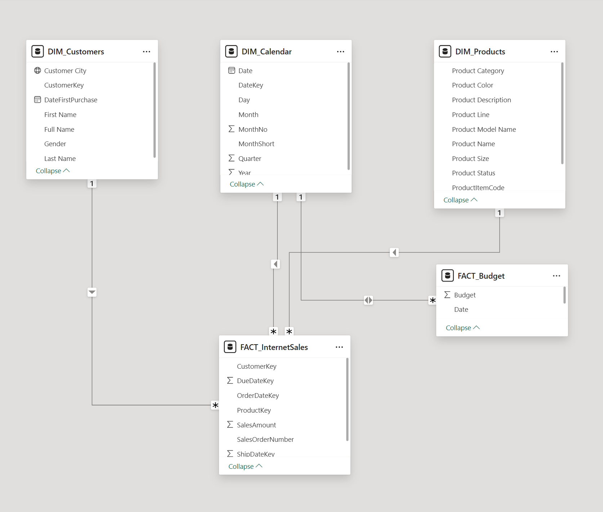
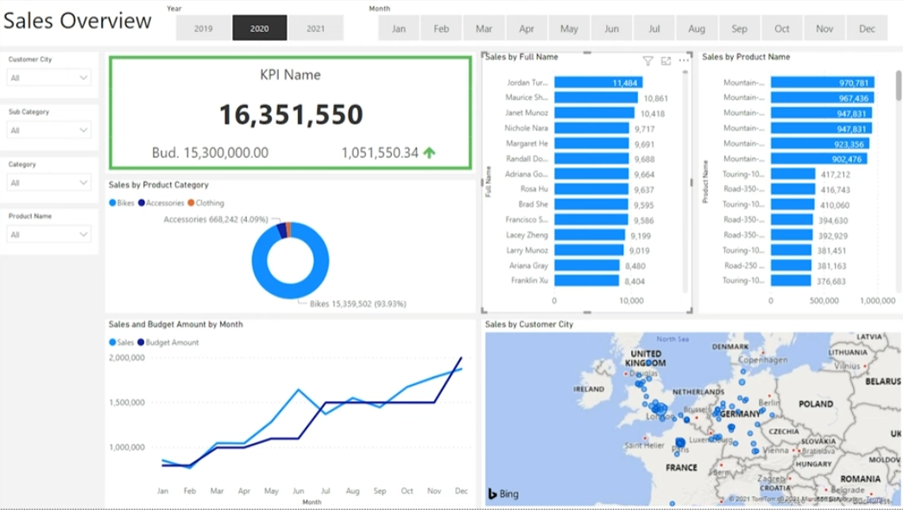

Sales Analytics Business Case
View original stakeholder request (context)
From: Steven – Sales Manager
Context: Initial request outlining reporting needs.
We need to improve our internet sales reports and move from static reports to interactive dashboards. The goal is to analyze sales by product, customer, and time, with filtering by salesperson and comparison against budget.
The provided budget is for 2021, and analysis typically includes two years of historical context.
Business Requirements & User Stories
Business Objective: Replace static internet sales reports with an executive, interactive dashboard to analyze sales performance and budget variance.
Stakeholder:
Steven — Sales Manager
Primary Goal:
Analyze sales by product, customer, and time, with salesperson-level filtering and comparison against budget.
Defined User Stories
| No # | As a (Role) | I want (Request / Demand) | So that I (User Value) | Acceptance Criteria |
|---|---|---|---|---|
| 1 | Sales Manager | To get a dashboard overview of internet sales | Can follow better which customers and products sells the best | A Power BI dashboard which updates data once a day |
| 2 | Sales Representative | A detailed overview of Internet Sales per Customers | Can follow up with customers that purchase the most and who we can sell more to | A Power BI dashboard which allows me to filter data for each customer |
| 3 | Sales Representative | A detailed overview of Internet Sales per Products | Can follow up with my Products that sells the most | A Power BI dashboard which allows me to filter data for each Product |
| 4 | Sales Manager | A dashboard overview of Internet sales | Follow sales over time against budget | A Power BI dashboard with graphs and KPIs comparing against budget |
Data Cleaning & Transformation
To create the necessary data model for doing analysis and fulfilling the business needs defined in the user stories, the following tables were extracted using SQL.
One data source (sales budgets) were provided in Excel format and were connected in the data model in a later step of the process.
Below are the SQL statements for cleaning and transforming necessary data.
DIM_Calendar
Created a clean date dimension to support time-based analysis, trend reporting, and date navigation across dashboards.
-- Cleaned DIM_Date Table
SELECT
[DateKey],
[FullDateAlternateKey] AS Date,
[EnglishDayNameOfWeek] AS Day,
[EnglishMonthName] AS Month,
LEFT([EnglishMonthName], 3) AS MonthShort,
[CalendarMonth] AS MonthNo,
[CalendarQuarter] AS Quarter,
[CalendarYear] AS Year
FROM [AdventureWorksDW2019].[dbo].[DimDate]
WHERE CalendarYear >= 2019
DIM_Customers
Standardized customer attributes and enriched customer records with geographic information to enable customer-level filtering and analysis.
-- Cleaned DIM_Customers Table
SELECT
c.CustomerKey,
c.FirstName + ' ' + c.LastName AS FullName,
CASE c.Gender
WHEN 'M' THEN 'Male'
WHEN 'F' THEN 'Female'
END AS Gender,
c.DateFirstPurchase,
g.City AS CustomerCity
FROM [AdventureWorksDW2019].[dbo].[DimCustomer] c
LEFT JOIN [AdventureWorksDW2019].[dbo].[DimGeography] g
ON c.GeographyKey = g.GeographyKey
ORDER BY c.CustomerKey ASC
DIM_Products
Prepared product attributes and category hierarchies to support product performance analysis and category-level drill-down.
-- Cleaned DIM_Products Table
SELECT
p.ProductKey,
p.EnglishProductName AS ProductName,
sc.EnglishProductSubcategoryName AS SubCategory,
pc.EnglishProductCategoryName AS Category,
p.Color,
p.Size,
p.ProductLine,
ISNULL(p.Status, 'Outdated') AS ProductStatus
FROM [AdventureWorksDW2019].[dbo].[DimProduct] p
LEFT JOIN [AdventureWorksDW2019].[dbo].[DimProductSubcategory] sc
ON p.ProductSubcategoryKey = sc.ProductSubcategoryKey
LEFT JOIN [AdventureWorksDW2019].[dbo].[DimProductCategory] pc
ON sc.ProductCategoryKey = pc.ProductCategoryKey
ORDER BY p.ProductKey ASC
FACT_InternetSales
Filtered and structured internet sales transactions to support KPI calculation, trend analysis, and budget comparison across time, product, and customer dimensions.
-- Cleaned FACT_InternetSales Table
SELECT
ProductKey,
OrderDateKey,
DueDateKey,
ShipDateKey,
CustomerKey,
SalesAmount,
OrderQuantity,
UnitPrice,
TotalProductCost
FROM [AdventureWorksDW2019].[dbo].[FactInternetSales]
WHERE
LEFT(OrderDateKey, 4) >= YEAR(GETDATE()) - 2
ORDER BY OrderDateKey ASC
Data Modeling
Below is a screenshot of the data model after cleansed and prepared tables were read into Power BI.
This data model also shows how FACT_Budget has been connected to FACT_InternetSales and other necessary DIM tables.
Model Diagram

Sales Management Power BI Dashboard

- Core questions: What products are selling, to which customers, and how trends change over time?
- Filters: Product, Customer, Date (and Salesperson if included).
- Benchmark: Actual sales vs 2021 budget with variance tracking.